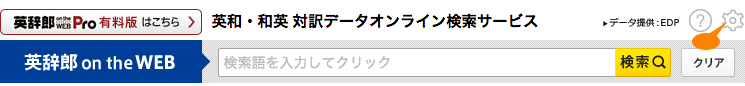
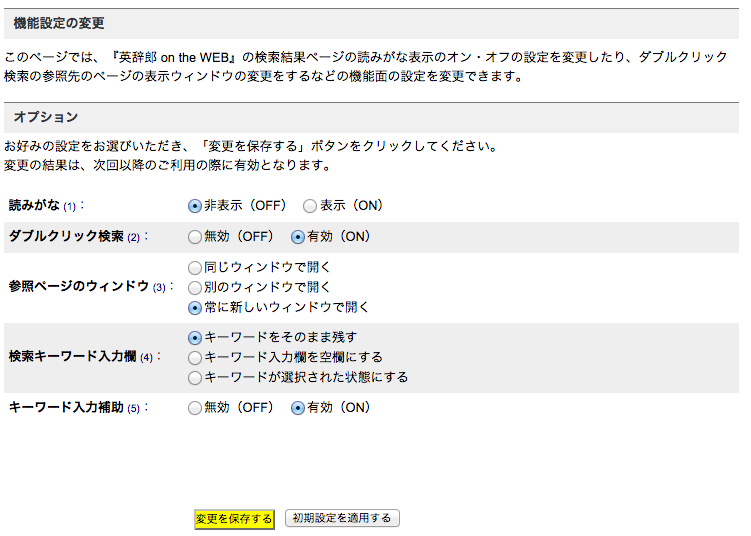

【Tip】ダブルクリックで再検索！
■ 「英辞郎 on the WEB」の検索結果を見ていて、例文に含まれている英単語に知らない単語が含まれていると、その単語の意味を調べようと改めてその単語で検索してしまうことがあるかと思います。こうしたニーズに対応するため、2007 年の「英辞郎 on the WEB」のリニューアルの際には「ワードリンク」という機能を取り入れました。このワードリンク機能を ON にしておくと、例文や見出し語中の英単語がリンクになっていて、検索したい単語をクリックすると、その単語で再検索ができるような機能でした。この「ワードリンク」の後継機能が「ダブルクリック検索」となります。
■ 「ダブルクリック検索」は、その名のとおり、「検索結果中の英単語をダブルクリックするだけで、その単語での再検索が実行できる」という機能です。「ダブルクリック検索」を利用するには、この機能が「有効（ON）」になっている必要がありますが、「機能設定の変更」のページからご確認いただけます。「機能設定の変更」ページへのリンクは、検索キーワード入力欄の右にある 「設定アイコン」に設置されています（右図、オレンジの吹き出しで示している部分）。
「設定アイコン」に設置されています（右図、オレンジの吹き出しで示している部分）。
■ 「機能設定の変更」ページで変更できるオプションは、「ダブルクリック検索」以外にも、いくつかありますので、ここでご紹介しておきます（各オプションの項目番号と右図のオレンジ色の数字は対応しています）。
-
読みがな（英和検索時のみ対応）：
このオプションが「表示」（ON）のとき、語義中の漢字の語彙に読みがなが表示されます（読みがなデータのない語彙もあります）
・初期設定 = 「非表示」（OFF）
-
ダブルクリック検索（英単語のダブルクリック時のみ対応）：
このオプションが「有効」（ON）のとき、検索結果中の英単語をダブルクリックすると、その単語で再検索できます（ワードリンク機能に代わる新機能です）
・初期設定 = 「有効」（ON）
※ 日本語の単語をダブルクリックしても検索はおこないますが、お使いのブラウザによっては、再検索したい文字列が必ずしも再検索されるわけではありませんので、あらかじめご容赦ください
-
参照ページのウィンドウ：
ダブルクリック検索を使ったとき、どのウィンドウで参照先のページを表示するかを選択できます
・初期設定 = 「別のウィンドウで開く」
-
検索キーワード入力欄：
初期設定では、検索結果ページ中の検索窓には、お調べになった検索キーワードがそのまま表示されます。この検索キーワードをクリアして検索キーワード入力欄を空の状態に変更したり、検索キーワードを選択した状態に変更できます
・初期設定 = 「キーワードをそのまま残す」
-
キーワード入力補助：
このオプションが「有効」（ON）のとき、検索キーワード入力欄に文字を入力するたびにその文字列で始まる見出し語候補が更新されながら表示される機能をご利用いただけます（詳しくは、キーワード入力補助機能の説明ページをご覧ください）
・初期設定 = 「無効」（OFF）
オプションメニューから、ご希望の設定をお選びください。「変更を保存する」ボタンをクリックすると、次回の検索から、その設定で「英辞郎 on the WEB」をご利用いただけます。また、「初期設定を適用する」ボタンをクリックすると、各オプションは先述の「初期設定」の状態になります。
この「ユーザ設定」導入以前の「ワードリンク」や「読みがな」の ON / OFF の設定は、そのまま「ユーザ設定」の「ダブルクリック検索」、「読みがな」のオプションに引き継がれます。
※ ユーザ設定含め、「英辞郎 on the WEB」のご利用には JavaScript が必要となりますので、あらかじめご了承ください。